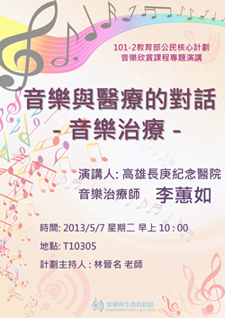

最新消息
3/12 協同教學「生命教育之情感議題」
2013/03/12
主講人：長榮大學通識中心 -
林乃慧
助理教授
主題：生命教育之情感議題
時間：2013/03/12 星期二 早上10:00
地點：T10305
4/30 專題演講「音樂與科技的對話」
2013/04/30
演講人：中央研究院資訊科技創新研究中心 - 林欣名研究助理
主題：音樂與科技的對話 -
制天命而用之
時間：2013/04/30 星期二 早上10:00
地點：T10305
5/07 專題演講「音樂與醫療的對話-音樂治療」
2013/05/07
演講人：高雄長庚醫院音樂治療師- 李蕙如老師
主題：音樂與醫療的對話-音樂治療
時間：2013/05/07 星期二 早上10:00
地點：T10305
5/21 專題演講「音樂與戲劇的對話」
2013/05/21
演講人：台南應用科技大學助理教授 - 高正賢老師
主題：音樂與戲劇的對話
時間：2013/05/21 星期二 早上10:00
地點：T10305
5/28 校外參訪「台南藝術大學」
2013/05/28
時間：2013/05/28 星期二 早上 8:20
地點：臺南市官田區大崎里66號
備註：
音樂學院 - 音樂學系
音像藝術學院 - 應用音樂學系
音樂會報告寫作說明
重要作業!!
2013/06/07